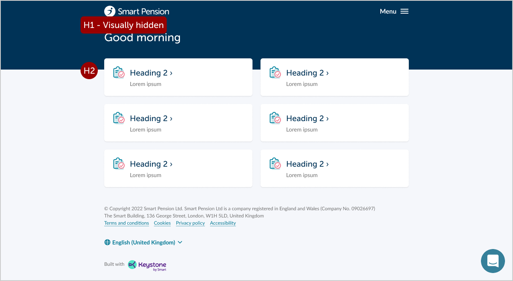
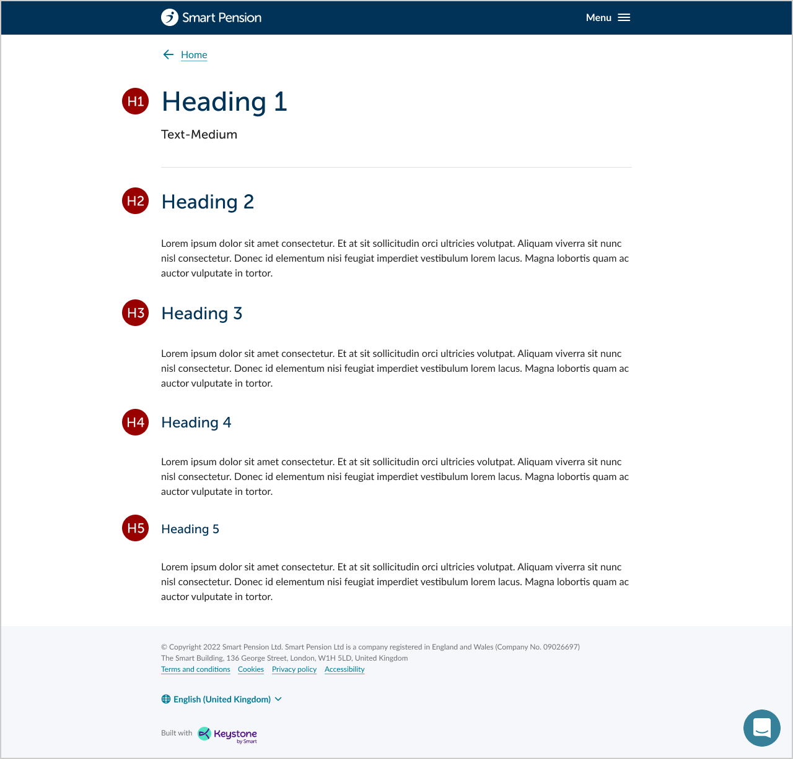

Headings
Headings are descriptive of the content that they contain, and are used to help break up "chunks” of content on a page. To improve headings accessibility on the site, ensure they are structured properly using HTML heading tags (<h1> <h2> <h3> etc.) Use descriptive and concise text for headings, making them relevant to the content they represent.
Here are some guidelines to ensure accessibility on headings:
Logical Heading Order:
Arrange the headings hierarchically and in a logical order. The main title should be represented using <h1>, followed by subheadings with <h2>, <h3> and so on. Avoid skipping heading levels, as this can confuse screen readers and other assistive technologies.
It is recommended to have a single visible <h1> on every page.
Screen Reader Compatibility:
Screen readers use headings to help users navigate and understand the structure of a page. Therefore, it's crucial to use proper heading tags rather than simply styling text to look like headings. Screen readers will announce the heading level to users, providing context and aiding in navigation.
Descriptive and Concise:
Keep your headings descriptive and concise. They should accurately summarise the content of the section they represent. Avoid vague headings like "Click Here" or "Read More," as they don't provide meaningful information.
The H1 of a page should normally be below 60 characters, and be copied for the Page title. However, headings can be longer where necessary for clarity.
ARIA Roles and Landmarks:
If the website uses dynamic content or single-page applications, consider implementing ARIA roles and Landmarks. These provide additional accessibility information for screen readers and other assistive technologies, helping users understand the page's structure.
Visual Styling:
While using proper heading tags is essential for accessibility, you can also enhance visual styling for headings. Make sure the headings stand out from the rest of the content, but avoid relying solely on visual cues (such as font size or colour) to convey meaning.
Testing and Auditing:
Regularly test the website with accessibility tools to identify and address any accessibility issues related to headings. Various online tools and browser extensions are available for this purpose.
Dashboard template
The H1 is visually hidden. For the member app this will say Your pension
| App | <H1> |
| Member - SPMT | Your pension |
| Member - Zurich | Your plan |
| Member - NIAC | Your retirement plan |
| Adviser | [tbc] |
| Employer | [tbc] |
Cards have the appearance of H5 but are tagged as H2.
{kind=link}

Standard template
All headers must be visible.
{kind=link}

Related
OLD CONENT
Headings are descriptive of the content that they contain, and are used to help break up "chunks” of content on a page.
Every page must have a consecutive heading order <h1> to <h5>. For example, <h2> should not be followed by <H4>. Skipping this order can be confusing.
It is recommended to have a single visible <h1> on every page.
Dashboard template
The H1 is visually hidden. For the member app this will say Your pension
| App | <H1> |
| Member - SPMT | Your pension |
| Member - Zurich | Your plan |
| Member - NIAC | Your retirement plan |
| Adviser | [tbc] |
| Employer | [tbc] |
Cards have the appearance of H5 but are tagged as H2.
Standard template
All headers must be visible.